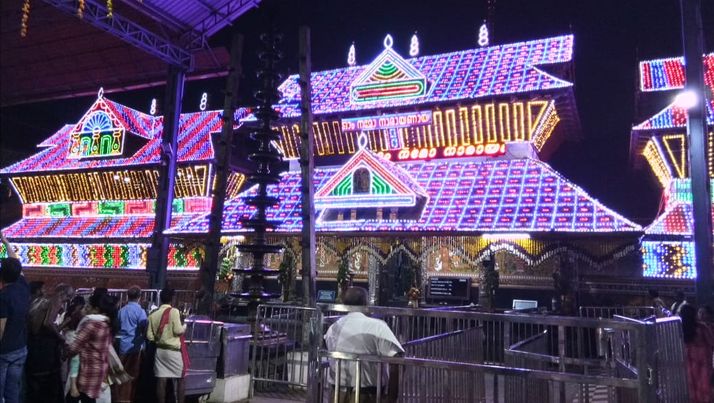
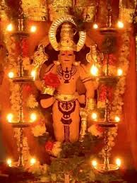
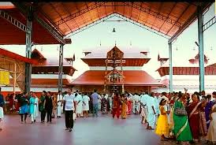
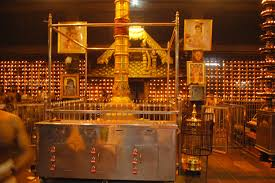

Guruvayavur
- This is the one of town in kerala
- The lord of krishna temple in Guruvayavur
- To visit the place is very nice and beautiful temple
- The night view of temple is beautiful
- To went to temple is my prefer of night
- Near temple so Many washrooms and fresh up rooms are avalible
- The mobiles are not allowed in temple
- The mobiles counters ara avalible temple sourindings
- Lord krishna temple is very popular in Guruvayavur
- The going to temple to were thw cultural dresses
- Gents is to were the white pancha without shirt to going darshan
- Ladies are to were the saree going temple
- To not a follw the above rules don't allow to the darshan
- The Guruvayavur coconet is oil is very famous
- To cook a food oil also coconet oil
- The coconet oil is very quality oil of kerala
- The price is also very high cost oils 1ltr 250 to 290
- Near Guruvayavur temple holesale oil store is avalible
- The cost of oil 1ltr is 210 is fixed rate to purchese the oil you can goto that store
- The night view of temple is very beautiful
- Because the all lighting are oil lightings
- The lord of krishna is on temple every day night to conduct a bajana and kerala drums music
- The town of Guruvayavur is avalible of buses and trains



